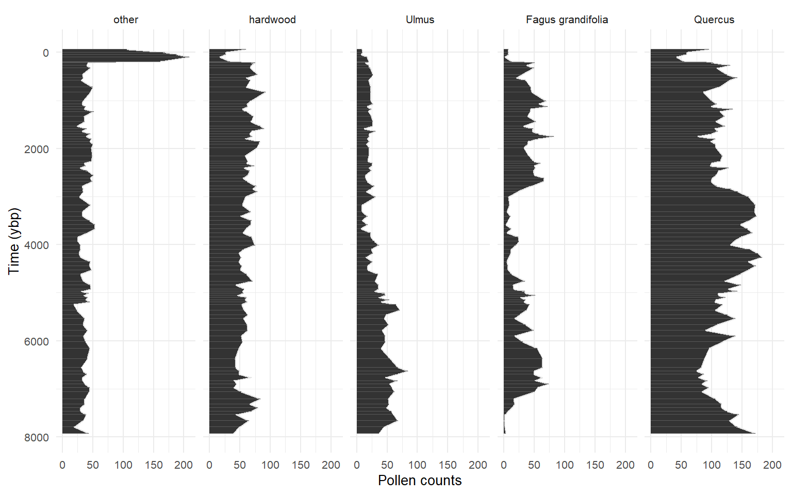

if (!require("pacman")) install.packages("pacman", repos="http://cran.r-project.org")
pacman::p_load(ggplot2, palmerpenguins) # Install & load packages
# From: https://allisonhorst.github.io/palmerpenguins/articles/examples.html
mass_flipper <- ggplot(data = penguins,
aes(x = flipper_length_mm,
y = body_mass_g)) +
geom_point(aes(color = species,
shape = species),
size = 3,
alpha = 0.8) +
scale_color_manual(values = c("darkorange","purple","cyan4")) +
labs(x = "Flipper length (mm)",
y = "Body mass (g)",
color = "Penguin species",
shape = "Penguin species") +
theme_minimal() +
theme(legend.position = c(0.2, 0.7),
plot.title.position = "plot",
)Workshop title
Quinn Asena
UW-Madison
2024-05-29
Workshop title
State-space modelling (expected outcomes?)
Multinomial distribution
R Markdown and Jupyter also support multiple languages too…
You decide ʕ•́ᴥ•̀ʔっ
What you learn here is generalisable!

Data
- \(Y =\) Count data (e.g., pollen, diatoms…)
- \(X =\) Matrix of covariates
Estimated effects
- \(B =\) Environmental covariates
- \(C =\) Species interactions
- \(V =\)
Fitting process
Decision streams
Fitting process
- complete matrix of covariates
- Incomplete matrix of response ok
Simulation experiments
Pro tip!
Simulation experiments
images of B
Simulation experiments
images of C
equations
Pretty, formatted equations can be inserted using the same syntax as in LaTeX. Inline equations (e.g., \(E = mc^2\)) are surrounded by a $ and equation bocks are surrounded by $$:
\[ N_{t+1} = N_t + r_{d}N_t \left(1- \frac{N_t}{K} \right) \]
markdown exercise
Your Turn 💻 :
Markdown exercise
Check out Quarto’s markdown guide
In the template Introduction section take 3-4 minutes to write:
a sub-heading under the introduction
a list
and an equation
cite one of the articles in in existing
.bibfile using the@render the document and hit the ✔️ in zoom
ttt
tabsets
Ok now the feature I find very useful: tabsets. Tabsets are great for showing, multiple results, data, code, whatever you want in tabs. Say, you want to show the plot on one tab and the model output table in the next, or multiple related plots. Much easier to read and flick among results than a long stream of plots and tables.
